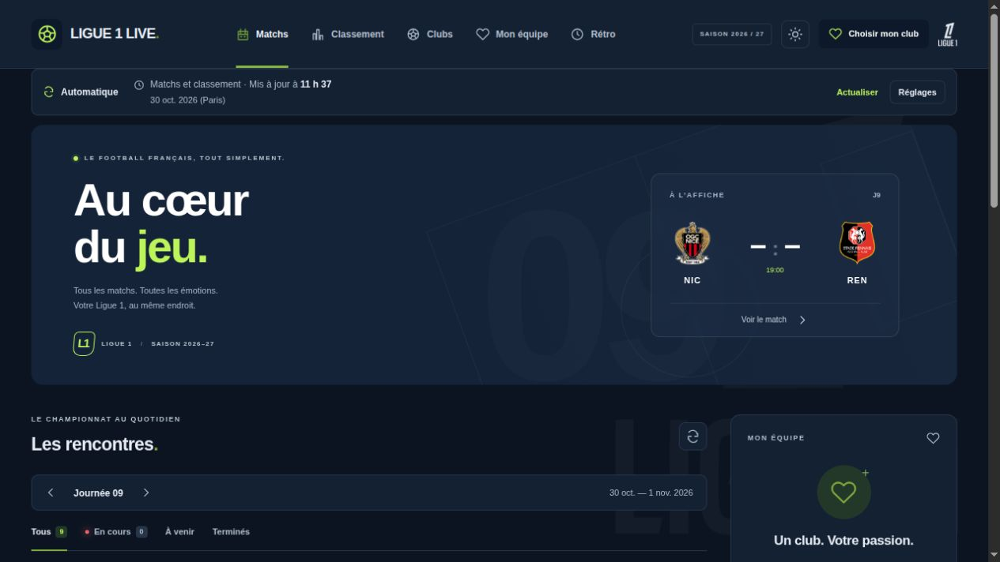
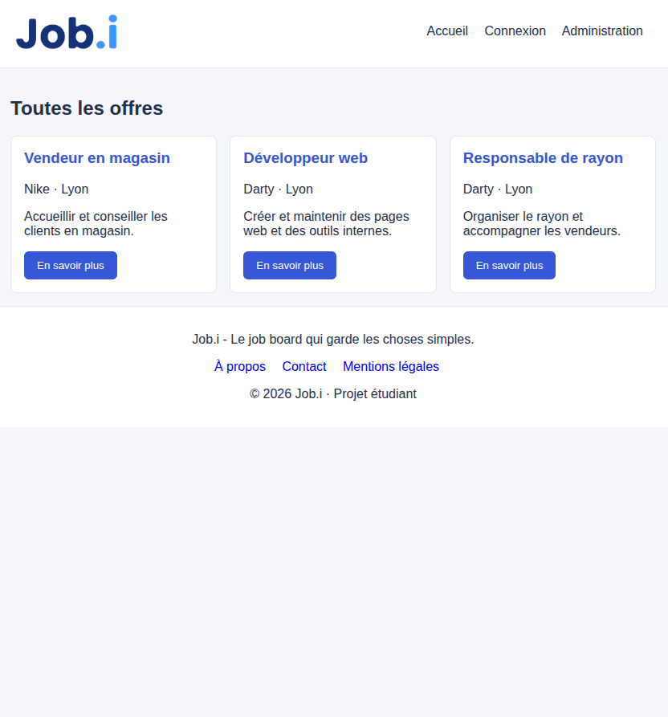
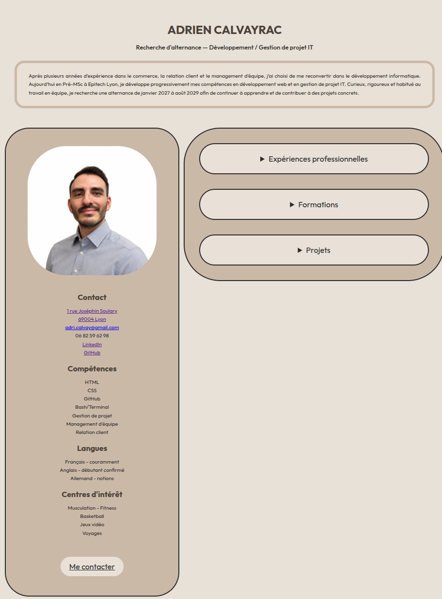
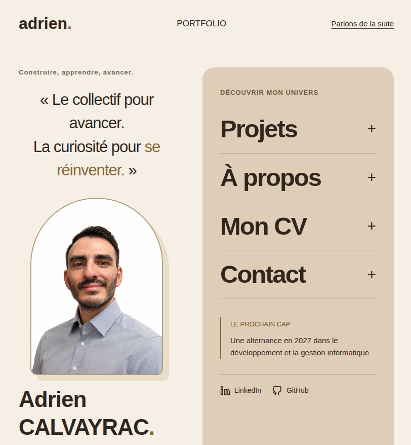

APPRENDRE PAR LA PRATIQUE
Mes projets.
Les premiers essais, les idées qui prennent forme et les apprentissages qui vont avec.
Ligue 1 Live

PROJET PERSONNEL
Une application web pour suivre le championnat de France de Ligue 1.
- Le contexte
- Un projet personnel qui prolonge mes premiers sites web avec une application interactive connectée à des données sportives.
- L’objectif
- Rassembler les matchs, les résultats, le calendrier et le classement dans une interface utilisable sur ordinateur et sur smartphone.
- Les fonctionnalités
- Consulter les rencontres par journée, suivre un club favori, parcourir les fiches clubs et joueurs et retrouver les saisons précédentes. Deux thèmes permettent de choisir un affichage clair ou sombre.
- L’organisation technique
- Une interface Vue 3, mise en forme avec Tailwind CSS et compilée avec Vite. Le serveur Laravel interroge les API Highlightly et API-Football, protège leurs clés et gère le cache et les quotas de requêtes.
- Le projet aujourd’hui
- Le site est publié sur alwaysdata. Les données disponibles et leur fréquence d’actualisation dépendent des fournisseurs. Les mises à jour du code sont testées puis déployées automatiquement.
Vue 3
JavaScript
Tailwind CSS
PHP
Laravel
Job Board

PROJET EPITECH
Une plateforme dédiée aux offres d’emploi.
- Le contexte
- Un projet réalisé en binôme dans le cadre de ma formation à Epitech.
- L’objectif
- Permettre de consulter des offres, de créer un compte et de déposer une candidature, avec une interface d’administration pour gérer la plateforme.
- Ma contribution
- J’ai participé à l’intégration de l’interface avec le backend Laravel, à l’authentification des utilisateurs et à la gestion des données depuis l’espace administrateur.
- Technologies et compétences
- Relier une interface en HTML, CSS et JavaScript aux routes Laravel et à une base MySQL, valider les données des formulaires et contrôler les accès selon le rôle de l’utilisateur.
- Ce que j’ai appris
- Ce projet m’a permis de travailler le parcours complet d’une donnée : saisie dans un formulaire, traitement côté serveur, enregistrement dans MySQL et affichage du résultat. J’ai aussi découvert l’importance des vérifications avant une action : connexion, droits et données reçues.
PHP
Laravel
SQL
MySQL
CV en ligne

PROJET EPITECH
Présenter mon parcours professionnel sous la forme d’une page web.
- Le contexte
- Un projet réalisé pendant mon apprentissage du HTML et du CSS à Epitech.
- L’objectif
- Rassembler ma présentation, mes coordonnées, mes compétences et mon parcours dans un CV accessible depuis un navigateur.
- Ma réalisation
- Une page avec une colonne de présentation et des rubriques repliables pour les expériences, les formations et les projets.
- Ce que j’ai travaillé
- La structure HTML, les classes CSS, les espacements, les couleurs et l’adaptation de la mise en page aux petits écrans.
HTML
CSS
Portfolio personnel

Présenter mon parcours, mes réalisations et mon objectif d’alternance dans un espace personnel qui évolue avec mes apprentissages.
- Le point de départ
- Créer un site de zéro, organisé en plusieurs pages.
- Ce que j’ai travaillé
- L’organisation du contenu sur quatre pages, la mise en page avec Flexbox, la navigation au clavier et l’adaptation aux écrans mobiles.
- La prochaine étape
- Continuer à enrichir mon portfolio avec de nouvelles réalisations et l’améliorer grâce aux retours reçus.
HTML
CSS
JavaScript